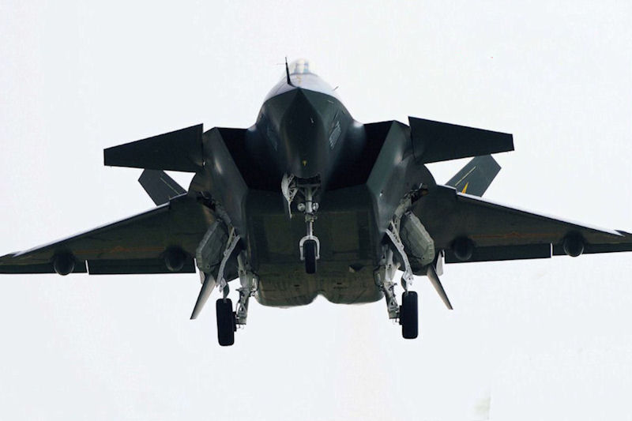
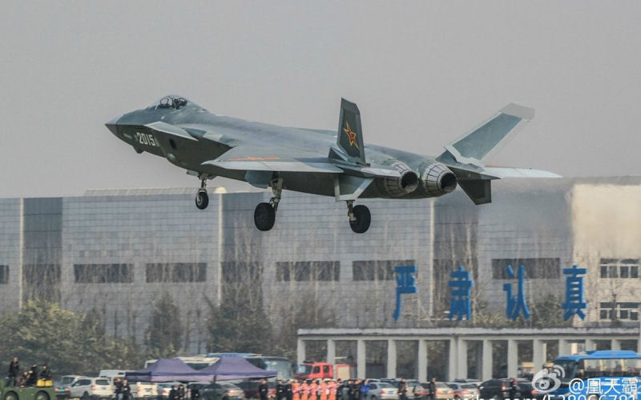
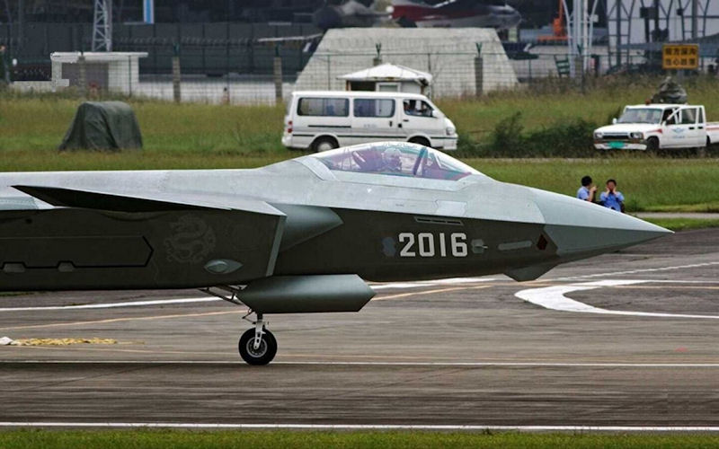
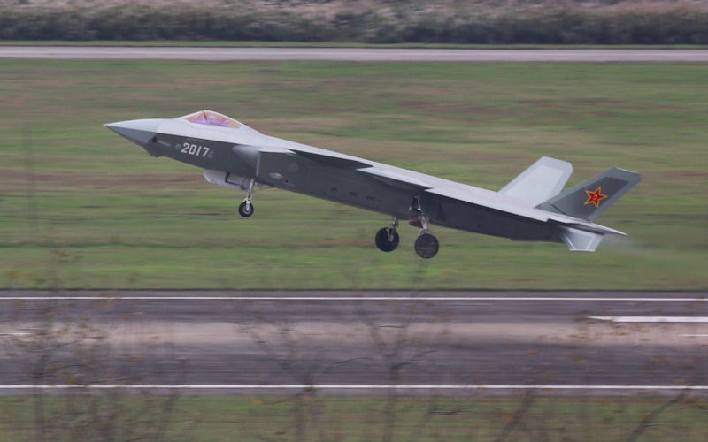
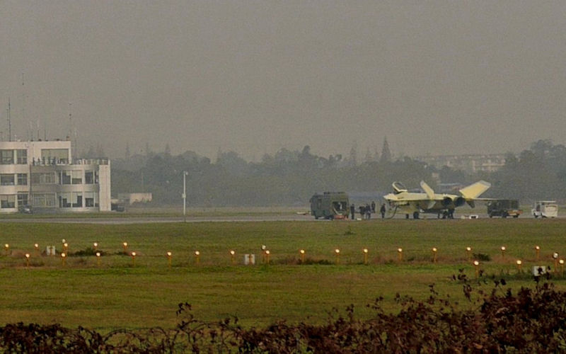
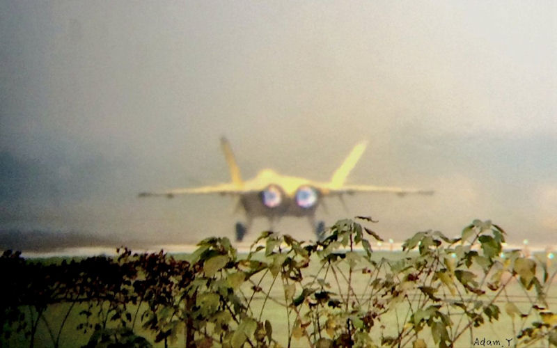
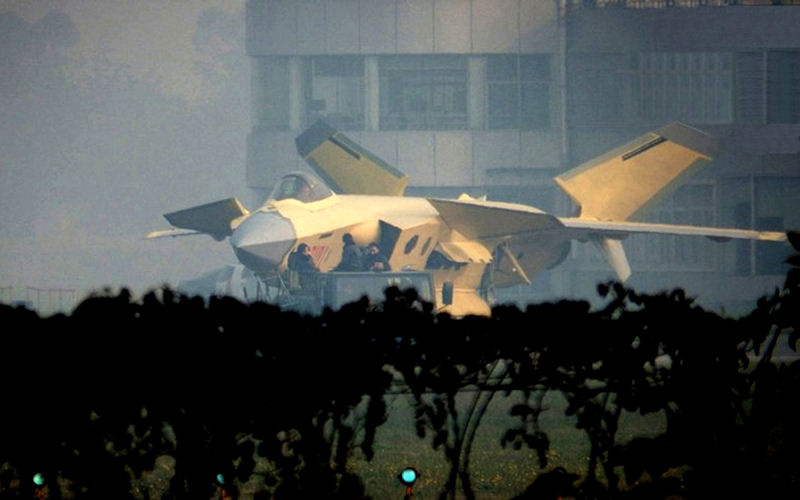

|
2016 Report on the State of the PLAN 
Note: For all photos in the report, refer to This Flickr Album for high resolution images of teach.
6. CHINESE 5TH GENERATION STEALTH AIRCRAFT DEVELOPMENTS
 J-20 5th Generation Stealth Aircraft: The Chinese scored a major coup in 2010 when they unveiled their first J-20 5th generation stealth aircraft. It was rolled out in late 2010 at a time when the US Secretary of Defense was visiting China and after he had indicated that the Chinese would be incapable of a 5th genertion stealth aircraft until the early 2020s. The US Defense Secretary was actually visiting China when the aircraft was unveiled. The Obama administration had used this erroneous forecast to curtail further production of the preimenent F-22 Raptor 5th genertion stealth fighter, which the US ended up building only 187 of. The J-20 prototype, 2001, first flew in January 2011. A second aircraft, 2002, was unveiled the next year in 2012. Then in 2014, three more were unvieled, showing clear progress and improvements on the design. The three unveiled in 2014 were aircraft numbers 2011, 2012, and 2013. Now in 2015, three more prototypes have been unveiled, aircraft numbered 2015, 2016, and 2017 and they again show even more progress and improvevments. These aircraft were believed to be approaching initial production level aircraft, and in fact, at the very end of the year, the Chinese rolled out an aircraft numbered 2101 which appears to be their first production aircraft. This is a monumental achievement for the Chinese. They unveiled a prototype 5th generation stealth aircraft in 2010 and now at the end of 2015 have unveiled their first production aircraft, ten years ahead of the forecast announced by the US Defense secretary in 2010.       Clearly, the decision to halt F-22 production in the US was premature, although the US has now proceeded with its second 5th generation stealth aircraft, the F-35, and has built over 160 of those. With numerous international orders from allies, the plan to ultimately produce upwards of 3,000 of the F-35 aircraft seems realizable. Nonetheless, with nine J-20 aircraft completed, no other nation on earth, outside of the United States, has as many flying 5th generation stealth aircraft as China, or a program showing as much progress and promise. It is clear to this author that by the 2018 time frame, the chinese will become the second nation to have their own 5th generation stealth aircraft in full production and in service. The Russians are coming along with their PAK FA program, but its development has been problematic and long, and has not matured as qucikly as the Chinese J-20 program...which may force the Russians to go ahead and declare it in service in order to keep pace.
Go to 7. South Chine Sea Island Reclamation in the 2016 PLAN Report RETURN TO MAIN PAGE OF THE 2016 PLAN REPORT
Other links of Interest:
World-Wide Aircraft Carriers
|